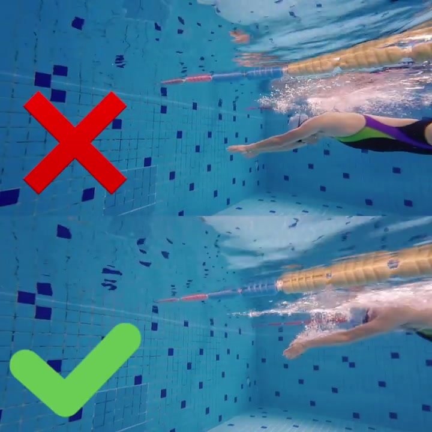
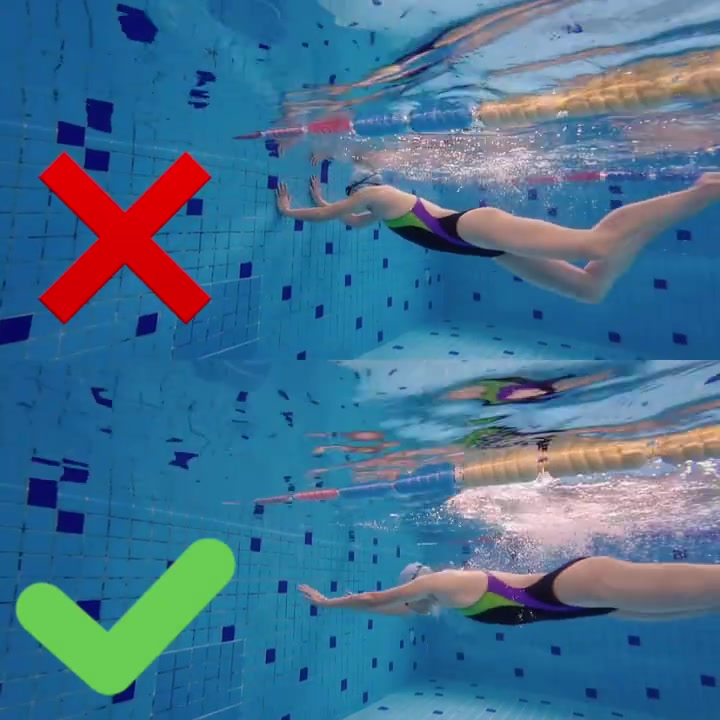
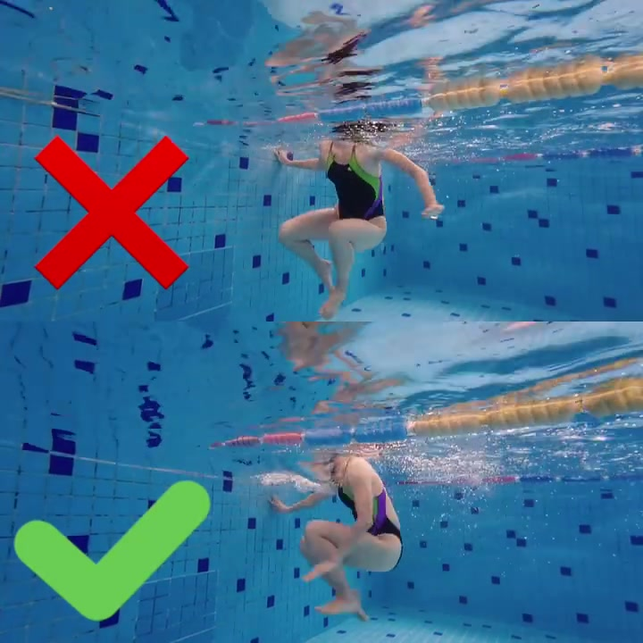
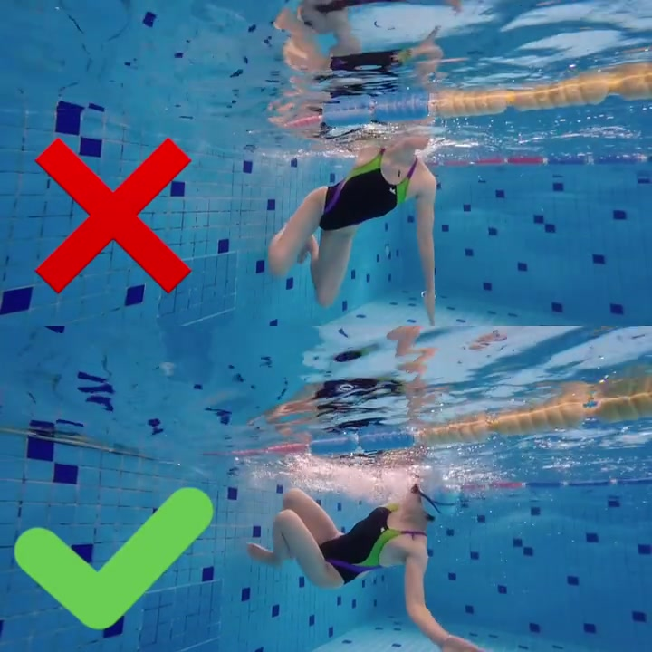
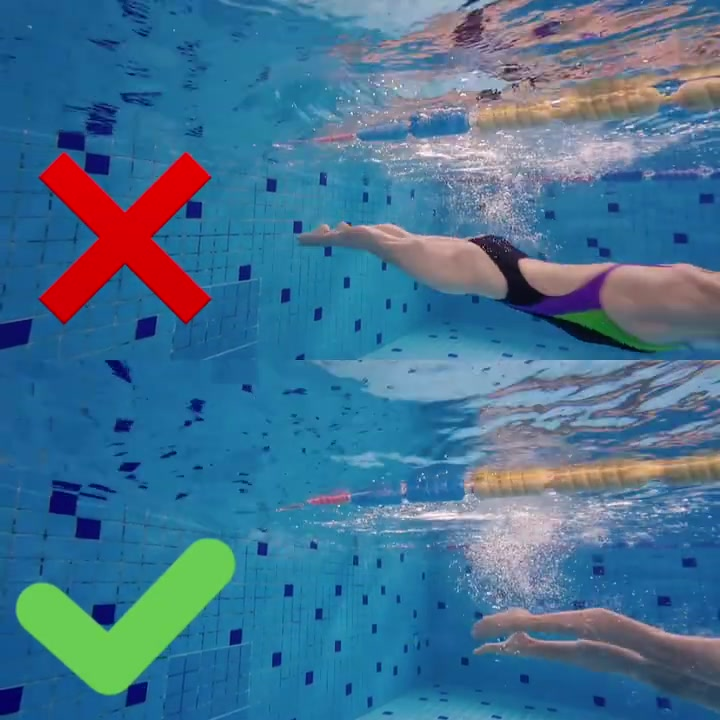

开场 · 00:00
为什么要做这组对比：学生转身踩了坑
笔记文案写道，学生在转身动作里碰到的问题「在我预设范围内」——也就是教练早已料到会出现这个错误，于是剪了一段水下分屏视频，把学生实际做出的问题动作（标红叉）和正确示范（标绿勾）并排放在一起讲透。全片没有一句口播，说服力全部来自这两条同步播放的水下轨迹。
本片音轨几乎无人声，Whisper 在极短静音片段上出现了字幕署名类幻觉文本，与画面内容不符，页末转录已按规则标记为「[听不清]」，不凭空补写口播内容。以下叙述完全基于水下画面证据。

同步滑行 · 00:01
转身前最后一冲：两组动作几乎一致
这一帧里，上下两位泳者仍在做转身前的最后冲刺——双手前伸、身体贴近水面滑向池壁，姿态几乎同步、看不出明显差别。这也说明问题不出在划水或冲刺本身，而是出在紧接着的转身细节上。

团身分歧 · 00:03
差异第一次出现：贴不贴墙、团得紧不紧
进入团身翻滚的瞬间，两组画面开始分岔。上格（红叉）泳者身体立起更直，膝盖抬升幅度更大，整体位置看起来离池壁更远；下格（绿勾）泳者身体压得更低、更贴近池壁转动，团身收得更紧凑。同一个转身动作，团身的松紧和与墙的距离，成了第一处可见的分歧点。

旋转紧凑度 · 00:04
翻滚过程中，紧凑度差异被放大
翻滚进行到一半，差异更明显：上格泳者的团身依旧偏松，膝盖离躯干较远，整套旋转看起来更费力、转动半径更大；下格泳者始终维持紧凑团身，贴着池壁完成旋转，动作显得更快、更省力。这一帧基本坐实了上一节的判断——差异不是发生在某一瞬间，而是贯穿整个翻滚过程。

蹬壁时机 · 00:06
蹬离池壁：谁先出发、谁贴墙更久
到了蹬壁阶段，上格泳者已经伸展成流线型并明显往前移动，位置比下格更靠近镜头——说明蹬壁发生得更早、身体更早离开池壁附近；下格泳者双手刚刚离开池壁，身体仍停留在池壁角落，贴墙时间更长。转身动作里「团身够不够紧」和「蹬壁够不够晚、够不够贴墙」，在这一帧被同时呈现出来。

8 秒看完记住什么
这条视频没有一句解说，全靠水下分屏画面说话：同一个转身动作，问题版本团身偏松、离墙较远、蹬壁偏早；正确版本团身紧凑、贴墙转动、蹬壁更晚也更贴墙。视频本身没有给出这些差异背后的力学原因，只呈现「哪里不一样」，具体为什么这样更省力、更快，需要结合专业教学背景资料理解。